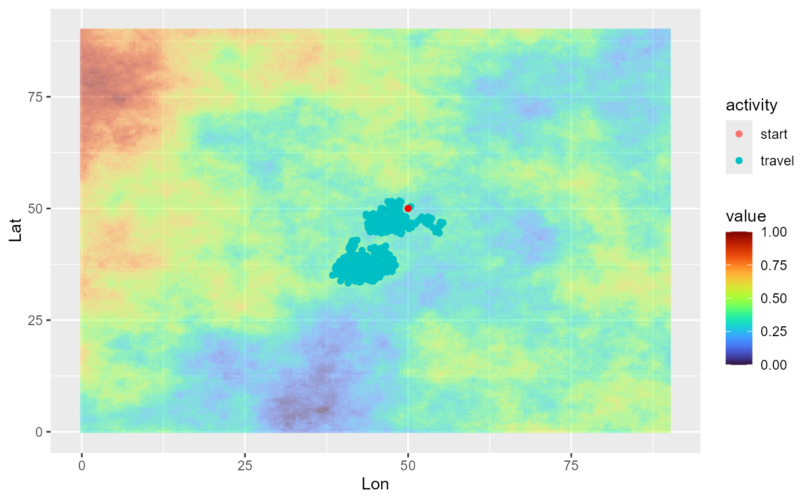
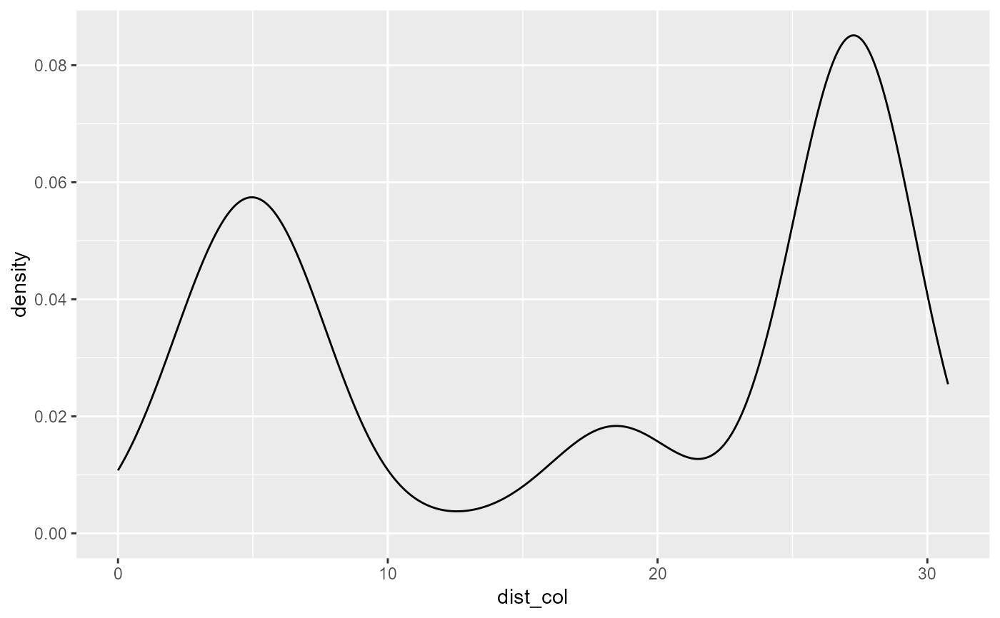
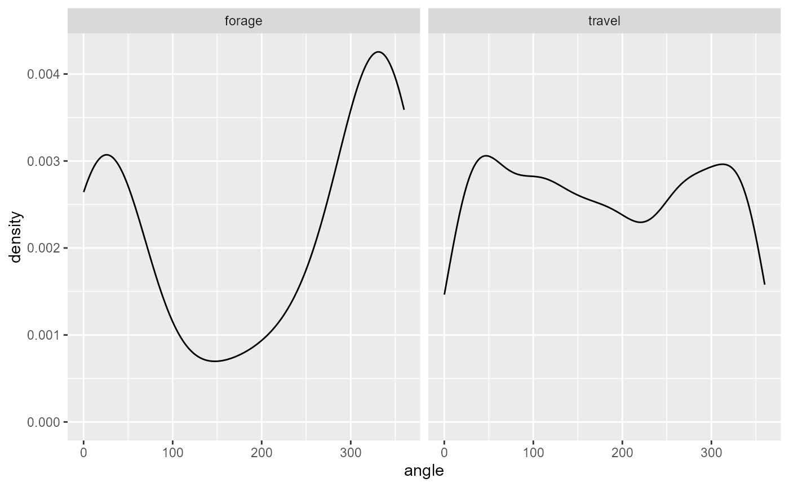
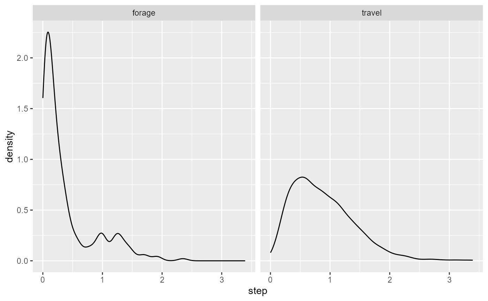

Simulate individual trajectory
simulate_trajectory_FR.RdSimulate the trajectory of a free ranging individual, over a given time period. The function works similarly as simulate_trajectory_CPF but the individual is not restrained around its colony and does not perform homing bout.
Usage
simulate_trajectory_FR(
initial_position,
resource_layer,
starting_hour,
starting_bearing = c(90, 10),
starting_step = c(4.5, 3),
travel_bearing = c(0, 20),
travel_step = c(3, 3),
foraging_bearing = c(0, 0.5),
foraging_step = c(1, 3),
minx = 0,
maxx = 90,
miny = 0,
maxy = 90,
step_duration = 1,
activity_threshold = 0.5,
max_duration = 720
)Arguments
- initial_position
data.frame containing the coordinates of the point the individual starts from (Lon, Lat fields)
- resource_layer
SpatRaster of the resource layer
- starting_hour
Starting hour
- starting_bearing
Bearing when departing the colony (mu, kappa)
- starting_step
Step length when departing the colony (mu, kappa)
- travel_bearing
Bearing from previous step when traveling (mu, kappa)
- travel_step
Distance from previous step when traveling (scale, rate)
- foraging_bearing
Bearing from previous step when foraging/searching (mu, kappa)
- foraging_step
Distance from previous step when foraging (scale, rate)
- minx
Minimum longitude of the bounding box to simulate trajectory within
- maxx
Maximum longitude of the bounding box to simulate trajectory within
- miny
Minimum latitude of the bounding box to simulate trajectory within
- maxy
Maximum latitude of the bounding box to simulate trajectory within
- step_duration
Duration of a step length, in minutes (defaults 1), defines the sampling interval
- activity_threshold
Threshold environmental value defining when an individual switches from travelling to foraging movement
- max_duration
Total duration of a full trip, in minutes (defaults to 720, 12h)
See also
Other individual movement functions:
potential_position_func(),
randomdir(),
randomdist(),
simulate_trajectory_CPF()
Examples
library(ggplot2)
library(viridis)
library(tidyterra)
library(lubridate)
colony_location <- data.frame(Lon = 50, Lat = 50)
cdt <- generate_env_layer(grid = create_grid(), n = 1, seed = 4)
#> [using unconditional Gaussian simulation]
single_traj <- simulate_trajectory_FR(initial_position = colony_location,
resource_layer = cdt$rasters,
starting_hour = ymd_hms("2022-08-02 06:00:00"),
starting_bearing = c(90,10),
starting_step = c(4.5, 3),
travel_bearing = c(0, 20),
travel_step = c(3, 3),
foraging_bearing = c(0, 0.5),
foraging_step = c(1, 3),
minx = 0, maxx = 90,
miny = 0, maxy = 90,
step_duration = 1,
activity_threshold = 0.7,
max_duration = 2000)
# view the trajectory
ggplot(single_traj) +
geom_spatraster(data = cdt$rasters) +
geom_point(aes(x = Lon, y = Lat, color = activity)) +
geom_point(data = colony_location, aes(x = Lon, y = Lat), col = "red") +
scale_fill_viridis(option = "H")

# look at the density distribution of distance to colony and movement parameters
ggplot(single_traj) + geom_density(aes(x = dist_col))

ggplot(single_traj |> subset(activity %in% c("forage", "travel"))) +
geom_density(aes(x = angle)) + facet_wrap("activity")

ggplot(single_traj |> subset(activity %in% c("forage", "travel"))) +
geom_density(aes(x = step)) + facet_wrap("activity")
